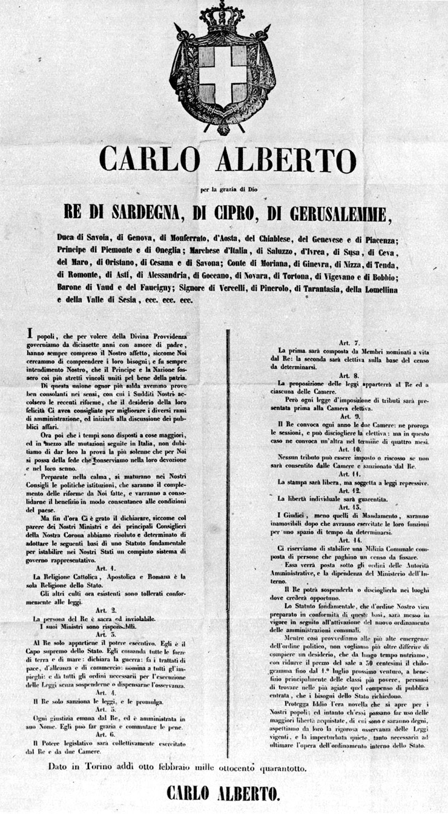
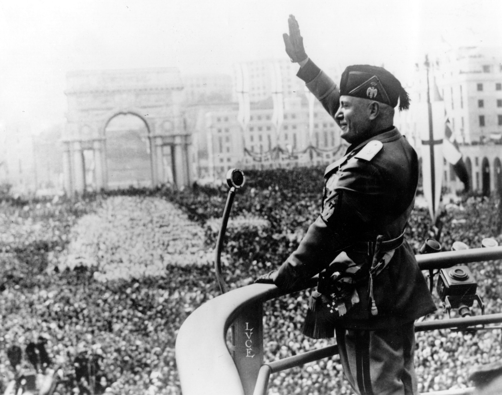

La libertà di stampa
la libertà di stampa è oggi un diritto che viene rispettato ma in passato non affatto.
Introduzione al tema
La libertà di stampa è uno dei principi fondamentali delle società democratiche. Essa garantisce ai giornalisti e ai mezzi di informazione il diritto di raccogliere, pubblicare e diffondere notizie e opinioni senza censure o pressioni indebite. Grazie alla libertà di stampa, i cittadini possono essere informati sui fatti di interesse pubblico, sviluppare un pensiero critico e partecipare in modo consapevole alla vita politica e sociale del proprio Paese. Oggi la libertà di stampa viene abbastanza rispettata ma in passato non era affatto così.
la libertà di stampa alle origini del regno d'Italia
Durante lo Statuto Albertino, la libertà di stampa era formalmente garantita dall’articolo 28, che affermava che “la stampa sarà libera, ma una legge ne reprime gli abusi”. In realtà, però, questa libertà non fu sempre pienamente rispettata. Lo Stato mantenne la possibilità di intervenire attraverso leggi e controlli che limitavano la diffusione delle idee considerate pericolose o contrarie all’ordine pubblico. Nel corso dell’Ottocento e dei primi decenni del Novecento, la stampa subì quindi periodi alterni di maggiore o minore libertà, fino a diventare fortemente controllata soprattutto in fasi di crisi politica e sociale.

Durante il periodo fascista
Durante il fascismo in Italia la libertà di stampa fu fortemente soppressa. Il regime, soprattutto dopo le leggi del 1925-1926, impose un controllo rigoroso sui giornali attraverso la censura e la chiusura delle testate non allineate. Il Ministero della Cultura Popolare (Minculpop) dirigeva e controllava i contenuti dei mezzi di informazione, imponendo una linea propagandistica a favore del regime. I giornalisti dovevano rispettare le direttive ufficiali e le notizie considerate scomode o critiche venivano eliminate, riducendo così la stampa a uno strumento di propaganda politica.
Oggi
Oggi in Italia la libertà di stampa è garantita dalla Costituzione, in particolare dall’articolo 21, che tutela il diritto di esprimere liberamente il proprio pensiero attraverso la stampa e altri mezzi di comunicazione. I giornalisti possono informare e svolgere inchieste senza censura preventiva, contribuendo al pluralismo dell’informazione. Tuttavia, la libertà di stampa deve rispettare limiti stabiliti dalla legge, come la tutela della privacy, della reputazione e della sicurezza dello Stato. Nonostante le garanzie costituzionali, il settore dell’informazione può ancora essere influenzato da pressioni economiche, politiche o mediatiche.

La libertà di stampa è uno dei pilastri fondamentali di una società democratica, perché permette ai cittadini di essere informati e di formarsi un’opinione autonoma sui fatti. Senza un’informazione libera e pluralista, diventa più difficile controllare il potere e riconoscere eventuali abusi. Allo stesso tempo, non basta che esista formalmente: deve essere anche concreta, cioè libera da pressioni politiche, economiche o da forme di censura indiretta. Quando l’informazione è condizionata o poco indipendente, la qualità del dibattito pubblico ne risente. Per questo la libertà di stampa va sempre difesa e accompagnata da responsabilità, correttezza e attenzione ai fatti.